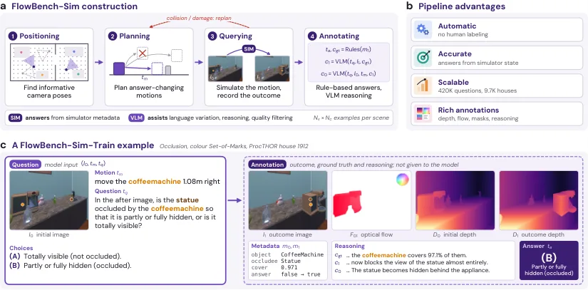
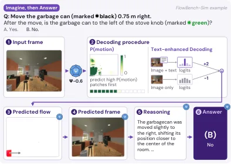
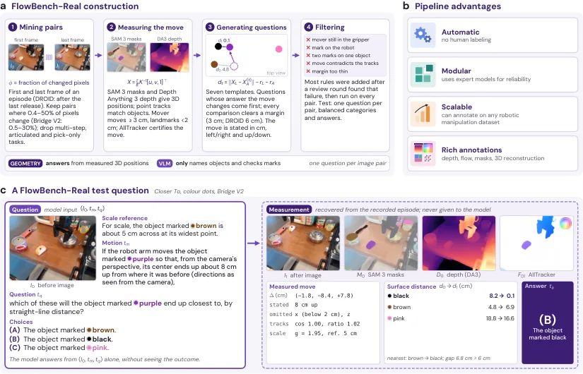
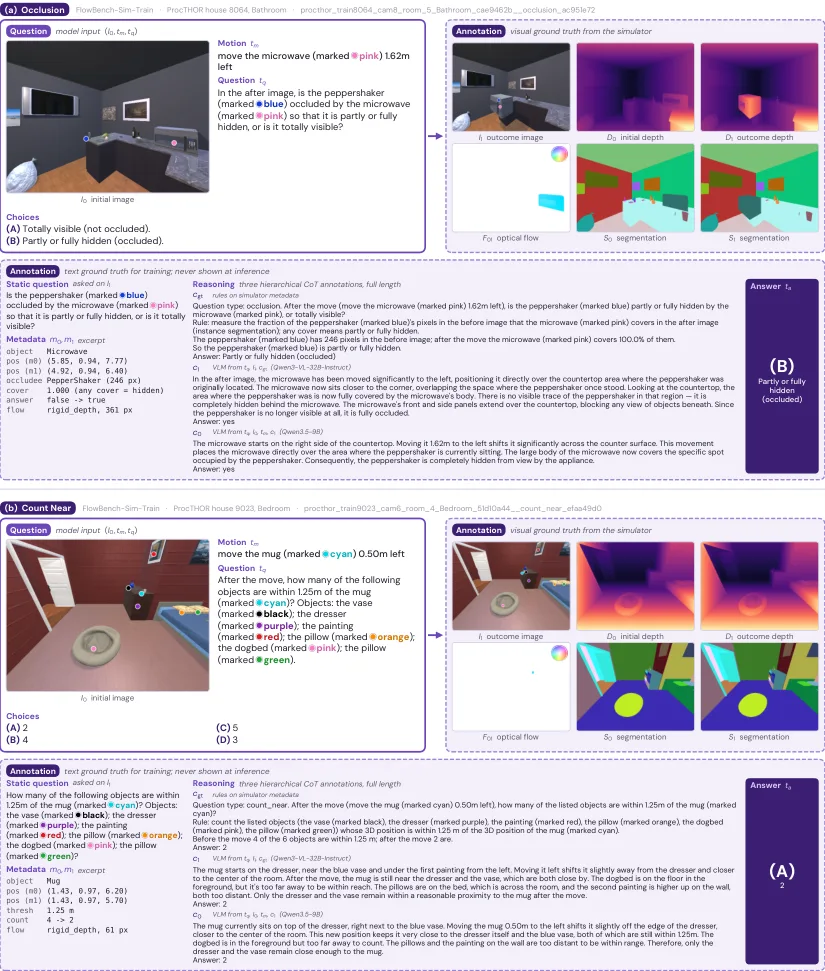
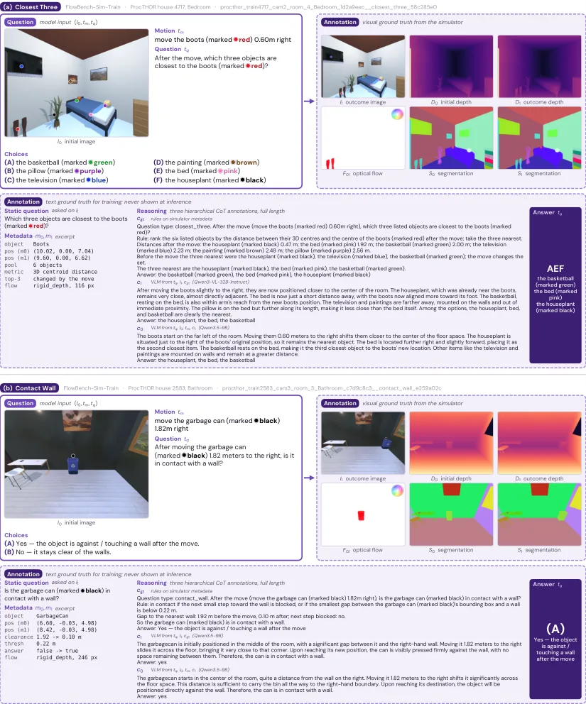

FlowBench：把“反事实空间想象”做成可训练、可评测的基准
FlowBench: Counterfactual Imagination Training for Spatial Intelligence
把“想象运动后的空间关系”做成多选题基准与训练集：Sim 42 万题 + Real 1,083 测试题，开源 VLM 接近随机（41–50%），在 Sim 上微调后真实测试 +16.9 点；世界模型侧 PSI-0.6 文本到光流从 52.1% 升到 61.7%。
real 1A accuracy
sim-to-real gain
imagination gap
text-to-flow
作者、单位与技术谱系 · Research context
作者与单位
研究脉络
- AI2-THOR / ProcTHOR（Kolve et al.; Deitke et al.）仿真基座关系：提供可编程的室内场景与物体状态元数据，FlowBench-Sim 的 1 万个训练场景与 120 个测试场景都由它生成。[论文 §3.3.1]
- PSI-0.6（统一 VLM 与世界模型）被评测对象与训练实验载体关系：既作为“统一感知与想象”的模型被评测，也被用来验证 FlowBench-Sim 能否提升世界模型的文本到光流与帧生成能力。[论文 §4.4 与 §5.4]
- 机器人视频数据与自动标注栈（SAM 3 / Depth Anything 3 / AllTracker）真实数据上游关系：真实侧样本从 Bridge V2、DROID、Language-Table、RT-1、Berkeley UR5 视频构建，用分割、单目深度与跨帧跟踪把观察位移改写成假设运动。[论文 §3.3.2]
合作网络
- 斯坦福团队与 FlowBench 代码仓库五位作者（Stanford University） → github.com/liuyifan22/FlowBench关系：共同署名与官方代码/数据发布仓库[FlowBench 代码仓库]
- FlowBench 对 AI2-THOR/ProcTHOR 的技术依赖FlowBench-Sim 生成流水线 → AI2-THOR 仿真器与 ProcTHOR 场景集关系：技术依赖（场景与状态元数据来源）[论文 §3.3.1]
- 被测模型与基准的关系FlowBench → GPT-6 Astra、Claude-Fable-5.1、Qwen3-VL、InternVL3.5、LLaVA-OV、Gemma-4、PSI-0.6关系：评测对象（含同等贡献作者所在机构的对照）[论文 §4.1]
作者、单位、同等贡献标注与致谢来自 arXiv HTML；数据来源与标注工具链来自 §3.3，属原文事实；技术接续来自正文引用，属有来源的解读。论文未给出个人主页与实验室名称，因此不推断导师或师生关系。
方法本质拆解 · What actually changed
是不是微调？
基准本身不训练；训练实验是对 Qwen3-VL-8B、Qwen3.5-9B、LLaVA-OV-2-8B 在 42 万条仿真训练题上做全参微调（直接回答），另有一个用推理注释 c0 训练的变体；世界模型实验则对 FOFPred、Qwen-Image-Edit、InstructPix2Pix、PSI-0.6 四类模型做 LoRA/QLoRA 或全参训练。真实数据完全不参与训练，因此真实测试集衡量的是 sim-to-real 迁移。
有没有额外约束？
评测侧用彩色 Set-of-Marks 点强制模型以标记指代对象，避免语言歧义；样本侧要求运动必须改变答案（真实侧保留 27% 不变答案的样本以抑制捷径），并对测量噪声设余量；生成侧运动限定为相机系下的水平/垂直厘米位移，并以可见地标宽度作尺度参照。
推理/后端到底做了什么？
推理没有额外后端：1A 直接让 VLM 输出选项，1B 允许先写推理再答，2A 换成结果图；世界模型辅助模式则是先生成光流、再生成结果帧、最后在生成帧上回答，解码时优先出高运动概率的 patch 并用文本增强引导。所有答案都把选项顺序洗三遍取平均。
方法本质是什么？
本质是把“想象”变成一个可对照的实验条件：同一道题，一次要求从变更前推演，一次直接给变更后图像，两者之差就是想象带来的额外误差。它改变的是评测的输入条件与数据生成方式，而不是模型结构；没有做的是多步交互、旋转与形变，也没有证明“想象”必须以显式中间表征实现。
输入初始图、假设运动与空间问题 → 用仿真元数据精确生成答案与结果帧/光流/深度/掩码 → 以 1A 与 2A 配对隔离“想象”成本 → 同一批数据既训练 VLM 也训练世界模型。

桥接价值Bridge
桥接价值
它补的是“从感知到推理”之间的一段：模型能看见当前场景，也能在给出结果图时答对空间关系，但要求它在脑中执行一次假设运动再回答，就明显变差。这对具身决策很关键——规划本质上就是在没有执行前判断“如果我这样动，空间关系会怎样”，而这恰好是当前 VLM 最薄的一环。对我们也一样：做可导航性判断、遮挡推理、动态物体影响评估时，需要的是变更后的判断而不是当前帧的描述，FlowBench 的 1A/2A 配对设计可以直接搬来做这类评测的对照组。
方法与模块Method
方法摘要
每条样本是四元组（初始图、假设运动文本、空间问题、答案），模型只看到前三个。仿真侧四阶段自动流水线：选视角、按类别程序化规划“会改变答案”的运动、在 AI2-THOR 中执行、用确定性规则从仿真器元数据算出答案，再由 VLM 依据“元数据 → 结果图 → 初始图加运动”的层级生成推理注释；因此答案精确、注释有据，且每例附带结果帧、光流、深度与语义分割。真实侧从公开机器人视频里用 SAM3 分割、Depth Anything 3 估深度、AllTracker 跟踪，把观察到的位移改写成“假设运动”，用静止物体作参照计算厘米级位移与答案，并以估计噪声为界设余量。评测有三种模式：1A 直接根据变更前图像回答，1B 先写推理再回答，2A 直接看结果图回答（作为上限对照）。
可迁移模块
第一，自动生成“答案会变”的样本：按类别写规划程序、只保留运动确实改变答案的样本，避免模型靠初始帧走捷径，这个筛法可以直接用于我们构造反事实评测。第二，把“结果图 + 光流 + 深度 + 掩码”打包成同一条样本，同一份数据既能监督 VLM 也能监督世界模型，省掉两套标注。第三，1A/2A 差值作为“想象成本”指标，配合按类别拆分（最近三物体、数量阈值、左右关系），能定位到底是度量估计差还是想象差。第四，失败诊断方式：世界模型生成的中间帧一旦丢失对象标记（Set-of-Marks），后续问题就无法落地——这提示我们评测生成式中间表征时要检查“对象身份是否保持”。

证据Evidence
关键证据与数字
真实测试集（1,083 题，1A）：GPT-6 Astra 88.4%（低推理档）、Claude-Fable-5.1 85.3%、人类合并 77.2%（95% 区间 72.8–81.0），九个开源模型只有 41.0–50.4%（随机 37.6%）。仿真测试集（714 题）：专有模型反而只有 54.6–56.6%，人类 64.2%。想象差（2A − 1A，真实）：Qwen3-VL-8B 13.0 点、Claude 5.0 点、GPT-6 Astra 3.1 点。在 Sim 上微调 Qwen3-VL-8B 后：仿真 46.9 → 76.3（+29.5），真实 42.7 → 59.6（+16.9），Qwen3.5-9B 真实到 67.7（+25.0）；但换成“先写推理再答”的变体只有 57.4/47.8，比直接回答低 18.9/11.8 点。世界模型侧：PSI-0.6 文本到光流准确率 52.1%（运动优先解码 + 引导）→ 61.7%，方向误差 25.1° → 8.6°；而“先想象再回答”只有 50.7%，低于直接回答的 55.7%。
边界与下一步Limits & Next Step
边界与风险
作者明确承认：1A 把感知与想象混在一起，2A 对照只在真实侧干净（仿真侧静态度量题本身就难）；真实侧答案依赖估计的深度、掩码与跟踪，绝对距离只是近似；专有模型只答 20–50% 的子集且各模型子集不同；真实视频是公开的，可能已被被测模型在训练中见过；运动只覆盖单个刚体的单步平移。我们另外注意两点：仿真上“看到结果”反而降低专有模型准确率，说明其瓶颈在读度量关系而不是想象，这会削弱“想象差”这一指标在仿真侧的解释力；人类基线只有 12 人、403 条回答，且与模型答题子集不完全相同，“模型超过人类”这类结论应看作指示性而非定论。
下一步实验
第一条，把 1A/2A 配对评测搬到我们的场景理解任务上：给定当前帧与一个候选运动（例如“货架被推走 50 cm”），让模型判断目标区域是否仍可通行/是否发生遮挡，并与“直接给结果帧”的准确率比较，差值就是我们模型的想象成本。第二条，用它的自动流水线思路，在我们的仿真环境里生成“答案必变”的反事实样本，检验数据量到多少时想象差开始收敛。第三条，把“对象身份保持”作为生成式中间表征的硬指标：统计生成帧里 SoM 标记的召回率，与后续问答准确率做相关，这能判断我们的世界模型是否只是“画得像”而没有保住可用于推理的结构。







